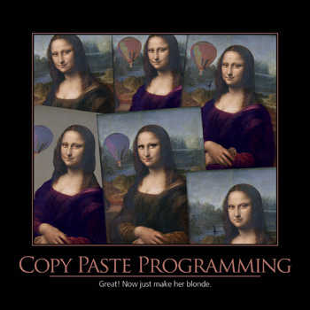

"I'd rather write programs to write programs than write programs"
- Dick Sites
This comes from a compiler writer, one of the wise elders of our profession, but it applies even to more mundane activities such as designing a web page. Which can be seen as a sort of code-generation machine on its own, since we're usually doing quite a bit of logic to output the right HTML/JS/CSS.

Human beings are notoriously bad at sweating the details.
Accordingly, any kind of hand-hacking of programs is a rich source of delays and errors.
The simpler and more abstracted your program specification can be, the more likely it is that the human designer will have gotten it right.
Generated code (at every level) is almost always cheaper and more reliable than hand-hacked.
We all know this is true (it's why we have compilers and interpreters, after all) but we often don't think about the implications.
High-level-language code that's repetitive and mind-numbing for humans to write is just as productive a target for a code generator as machine code.
It pays to use code generators when they can raise the level of abstraction - that is, when the specification language for the generator is simpler than the generated code, and the code doesn't have to be hand-hacked afterwards.
- The Art of Unix Programming
This quote was from a book written in 2003, funny how the world hasn't changed a lot, has it?
This is not that different from the copy-paste technique, it only automates away the find-and-replace part. Still, this small abstraction over the changing part is already a gamechanger.
In case you are not familiar with those, here are some plugins for most text editors:
I believe all of these use the TextMate snippet syntax, which is good for sharing the simpler snippets.
Of course, advanced users of these packages can customize snippets to do more, sometimes even call code (yasnippet can call Emacs Lisp, ultisnips can call Python). This is usually not portable but works better for more advanced snippets.
Personal anecdote: learning to use those has saved me from wrist inflammation, which is a big problem in this line of work.
So, when you have a framework in place, you know how the files should be laid out in your application, and you don't want to keep opening new files and expanding them manually, what do you do? Enter Rails generators.
Rails generators are a small DSL built on top of Thor (as are most of the commands in the `rails` executable) that allows one to write code that writes code. You can read more about its basics in the official documentation.
For simpler scenarios, there is no necessity of writing a full-fledged generator, since you are usually well-served by a medium-to-large code snippet.
Due to Ruby's extremely dynamic nature, we are able to perform some quite complex operations to generate our code. And we can thank most of these to:
The already mentioned TAoUP has a section on what it calls "metaclass hacking":
I considered writing a glue layer that would explicitly know about the structure of all three classes and use that knowledge to grovel through the initializer creating matching objects, but rejected that idea because new class members were likely to be added over time as the configuration language grew new features. If the object-creation code were written in the obvious way, it would once again be fragile and tend to fall out of synchronization when either the class definitions or the initializer structure dumped by the –configdump report generator changed. Again, a recipe for endless bugs.
The better way would be data-driven programming - code that would analyze the shape and members of the initializer, query the class definitions themselves about their members, and then impedance-match the two sets.
Lisp and Java programmers call this introspection; in some other object-oriented languages it's called metaclass hacking and is generally considered fearsomely esoteric, deep black magic. Most object-oriented languages don't support it at all; in those that do (Perl and Java among them), it tends to be a complicated and fragile undertaking. But Python's facilities for introspection and metaclass hacking are unusually accessible.
Thankfully, Ruby's facilites for this are very accessible too!
Some ActiveRecord methods I used recently that has been quite helpful:
attribute_types
These are integrated with the ActiveModel API to provide model name introspections, conversions, translations and validations, among other features.
# [5] pry(main)> User.attribute_types # => {"id"=> #<ActiveModel::Type::Integer:0x0000560c033c4708 @limit=8, @precision=nil, @range=-9223372036854775808...9223372036854775808, @scale=nil>, "email"=>#<ActiveModel::Type::String:0x0000560c0340c058 @limit=nil, @precision=nil, @scale=nil>, "encrypted_password"=>#<ActiveModel::Type::String:0x0000560c0340c058 @limit=nil, @precision=nil, @scale=nil>, "reset_password_token"=>#<ActiveModel::Type::String:0x0000560c0340c058 @limit=nil, @precision=nil, @scale=nil>, "reset_password_sent_at"=> #<ActiveRecord::ConnectionAdapters::PostgreSQL::OID::DateTime:0x0000560c03417700 @limit=nil, @precision=nil, @scale=nil>, "status"=> #<ActiveRecord::Enum::EnumType:0x00007f352833dd80 @mapping={"inactive"=>0, "active"=>1, "pending_approval"=>2}, @name="status", @subtype= #<ActiveModel::Type::Integer:0x0000560c033c4870 @limit=4, @precision=nil, @range=-2147483648...2147483648, @scale=nil>>}
reflect_on_all_associations
From the documentation:
Reflection enables the ability to examine the associations and aggregations of Active Record classes and objects. This information, for example, can be used in a form builder that takes an Active Record object and creates input fields for all of the attributes depending on their type and displays the associations to other objects.
There's a whole book on the subject of metaprogramming Ruby, you should read it if you haven't already. And if you want your black belt on metaprogramming techniques, you can reach for Paul Graham's On Lisp.
Rails' generators include some helper methods to work with ERB templates, which are:
ERB (Embedded RuBy) is a feature of Ruby that enables you to conveniently generate any kind of text, in any quantity, from templates. The templates themselves combine plain text with Ruby code for variable substitution and flow control, making them easy to write and maintain.
In case you need a quick introduction to their syntax and capabilities, see this blog post.
Combined with the introspection APIs shown above, it is not too difficult to create quite complex generators that are "self-referential". One common pattern for this in Ruby would be:
def some_generator_method(class_name) class_name.constantize.attribute_types.map { |attribute| # your logic goes here... } end
Methods defined inside a generator are automatically in scope of the templates accessed by it, so you can use that for isolating the logic that goes into some more advanced code generation, and keep the templates to structure and layout the data.
Here's an example ERB template from a generator we created recently, one that automatically writes test code for a GraphQL resource:
RSpec.describe '<%= model_class %>' do include_context 'GraphQL test' let!(:<%= model_class.underscore %>) { create(:<%= model_class.underscore %>) } let(:<%= model_class.underscore %>_attrs) { OpenStruct.new(attributes_for(:<%= model_class.underscore %>)) } describe 'query' do let(:expected_<%= model_class.underscore %>_response) { hash_including( id: <%= model_class.underscore %>.id, <% model_attributes.each do |name, _| %> <%= name.camelize(:lower) %>: <%= model_class.underscore %>.<%= name.underscore %>, <% end %> ) } describe 'all' do let(:query) do <<~GRAPHQL query { <%= model_class.pluralize.camelize(:lower) %> { edges { node { id <% model_attributes.each do |name, _| %> <%= name.camelize(:lower) %> <% end %> } } } } GRAPHQL end it 'returns all <%= model_class.pluralize.underscore %>' do expect(response).to include( data: hash_including( <%= model_class.pluralize.camelize(:lower) %>: hash_including( edges: array_including(hash_including( node: expected_<%= model_class.underscore %>_response )) ) ) ) end end end end
The Ruby community is known for its adherence to TDD practices. Rails' generators are no exception, they come with their own convenience methods for testing the generated files.
Unfortunately the official documentation is lacking comprehensive material on how to actually test the generators. There is a blog post by the maintainer of the montrose gem, which has helped us a lot.
Rails is biased towards minitest, which is not much of a problem if you are a RSpec fan since it has a spec-like syntax. There is ammeter if you really want to use RSpec, though.